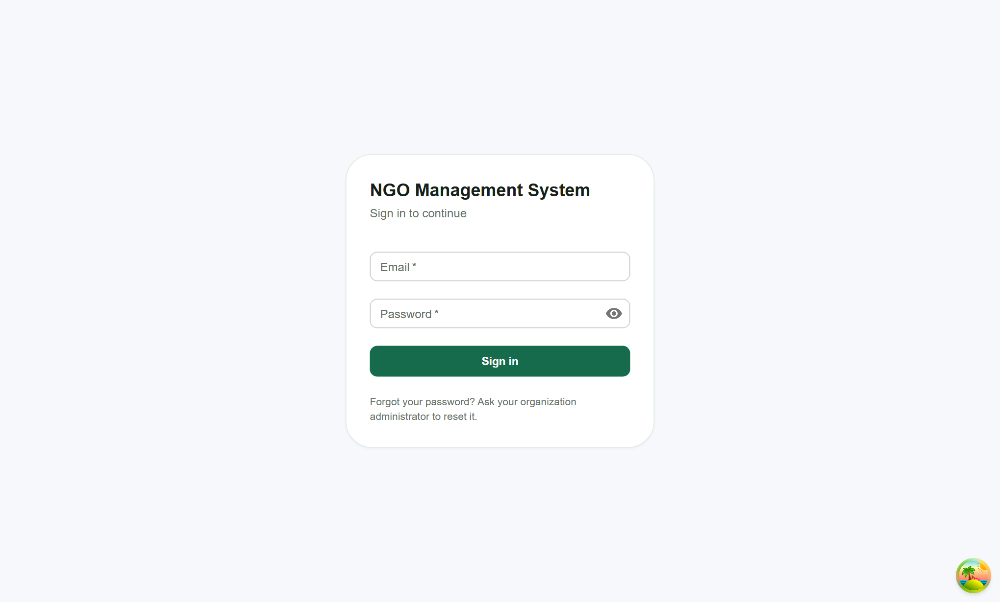
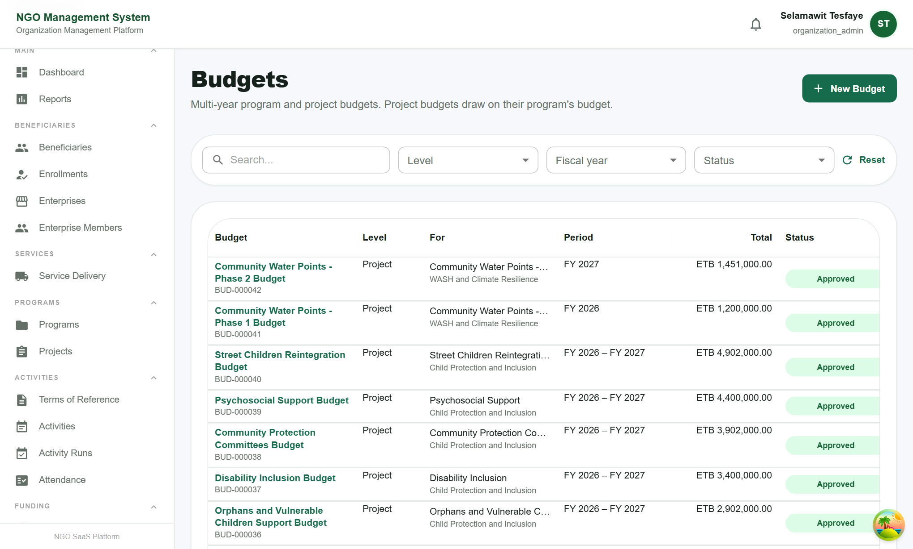
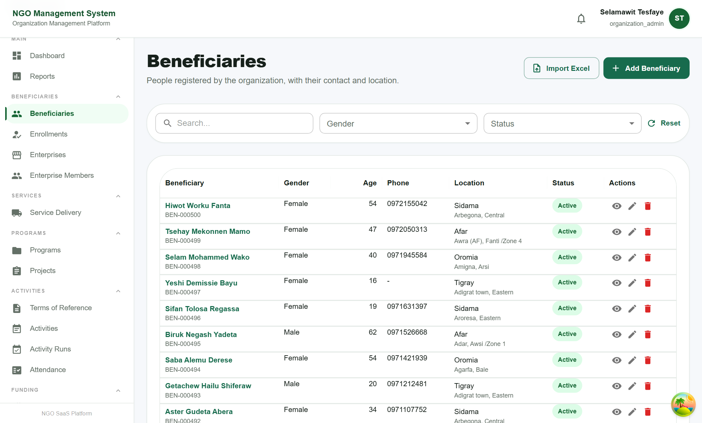

NGO Management System
Quick Start Guide: step by step
Web address: https://ngo-system-e5af.onrender.com
Your login: sent to you separately (email and password)
Works in: Chrome, Edge or Firefox, on a computer or tablet
Version 1.0 · October 2026
This guide shows the main steps for trying the system. Page 2 explains how to sign in and what each
type of user can do. Page 3 shows the order of work. The rest of the guide walks through each step.
1. Sign in
- Open https://ngo-system-e5af.onrender.com in your browser.
- Enter the Email and Password you were given, then click Sign in.
- The opens. The menu on the left shows only what your login is allowed to use.
- To leave, open the menu under your name at the top right and choose Logout.

First visit of the day: the site may take up to one minute to open while the server starts. After that it is fast.
Forgot your password? Ask your organization administrator to reset it. You will be asked to choose a new
password at your next sign-in.
What each user type can do
| User type | Can do |
|---|
| Organization Admin | Everything: settings, users and roles, lists (lookups), programs, projects, approvals, reports. |
| Finance Officer | Budgets, expenses, donors and donations, including approving budgets and expenses. |
| Data Entry | Daily records: beneficiaries, enrollments, enterprises, terms of reference, activity runs, attendance, service deliveries, expenses (to be approved by finance). |
| Viewer | Can look at everything and run reports, but cannot change anything. |
The administrator can also create custom roles () and choose exactly what each one may do.
2. How the work flows
Work in this order. Each step uses what the earlier steps created, so the lists you need appear in the forms.
1 · Set upOrganization, users, lists (lookups)
2 · PlanPrograms, projects, budgets, terms of reference, activities
3 · FundDonors and donations
4 · Do the workBeneficiaries, activity runs, attendance, service delivery, expenses
5 · ReportDashboard and reports, with Excel/PDF export
How things connect
| Record | Belongs to | Example |
|---|
| Program | The organization | Women and Youth Livelihoods |
| Project (and its phases) | A program | Small Business Start-up Grants, Phase 1 |
| Activity | A project | Business skills training |
| Activity run | An activity (one batch, place and dates) | Batch 2, Adigrat town |
| Attendance session | An activity run | Training session 1, 5 May |
| Service delivery | A program (and optionally a project, activity or run) | Hygiene kits to 40 households |
Statuses: what they mean
| Status | Meaning |
|---|
| Planned | Not started yet. |
| Active | Running: everything can be added. |
| Suspended | Paused: nothing new can be added until it is Active again. |
| Completed | Finished: no new plans, but late records (deliveries, attendance, expenses) can still be added. |
| Cancelled | Stopped: nothing new can be added, and it is not counted in reports. |
Budgets, terms of reference and expenses go through approval: Draft → Submitted → Approved (or Returned for changes).
3. Set up (Organization Admin, once)
- : check your organization's name, contact and logo.
- : create a login for each staff member and choose their role.
- : review the lists used in forms (service types, items, units, activity types, gender and others), and add your own.
- (optional): add extra questions to the beneficiary form, for example "Disability type".
- (optional): use your organization's own words, for example "Fund" instead of "Donation", or "Ongoing" instead of "Active". Screens and reports change at once.
4. Plan the work
- : name, dates, target and status.
- : choose the program, set the donor, manager and dates. For a project in phases, open the project and use Add Phase in the Phases card.
- : budget lines per year (fiscal year = January–December). Click Submit for Approval. A finance officer or admin then Approves it or Returns it for changes.
- : write the TOR for an activity and submit it. Once approved, the activity can be created from it.
- : the activity under its project (dates must be inside the project's dates).
- : each batch or round of the activity, with location and dates.

Budgets: each line shows its period, total and approval status.
5. Record funding
- : the donor's name, type and contact.
- : donor, amount, currency (ETB, USD, EUR, GBP or CHF) and the program or project it funds. For a foreign currency, enter the exchange rate on the day it was received. Reports also show the value in ETB.
- Status: Pledged (promised) or Received. Only received money counts as funding received.
6. Register beneficiaries
- : name, gender, date of birth, phone, and location (choose Region, then Zone, then Woreda).
- For many people at once, click Import Excel, then Download Template. Fill in the template and upload it. Rows with problems are listed so you can correct them.
- : enroll each person in the program they belong to.
- For groups and businesses: (the group) and (its members).

Beneficiaries: search, filter, open, edit, or import from Excel.
10. Good to know
The system checks your entries
- Dates: an end date cannot be before its start date. Records must fall inside their parent's dates (for example an activity inside its project's dates). Completed work cannot have a future date.
- Status: nothing new can be added to suspended or cancelled work, and inactive people or donors cannot receive anything new.
- Money: each amount keeps its own currency. Totals are shown per currency, plus the ETB value where a rate is known.
- If something is refused, the message says which field to check and why.
Tips
- Each list has Search, filters and Reset. Click a name to open the record.
- Codes (BEN-000123, PRG-000001-PRJ-002 …) are created automatically. Use them when talking about a record.
- Everything you change is saved immediately and recorded in the history (audit log).
Trying the system: the demo organization already has sample data (500 beneficiaries, programs, projects,
donations, budgets and reports). Feel free to add, change and approve records. Everything you enter is
real in the demo and can be reset afterwards.
Need help?
Contact your system provider with a short description of the problem, the page you were on and a screenshot.